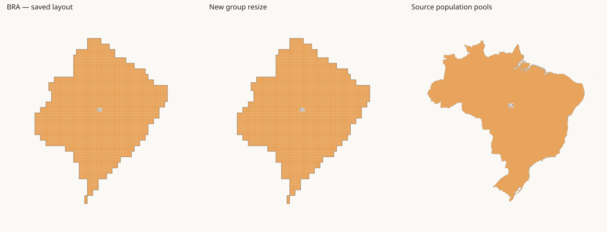
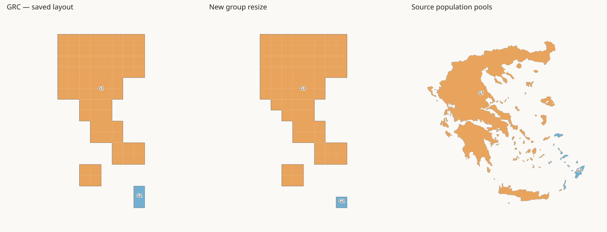
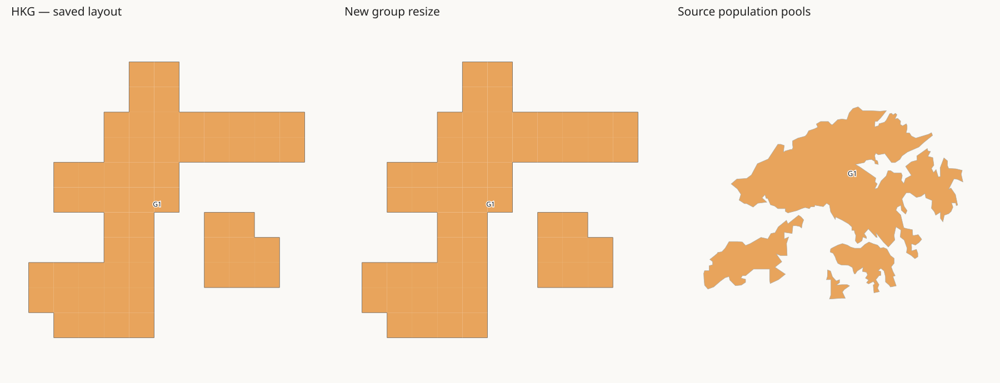
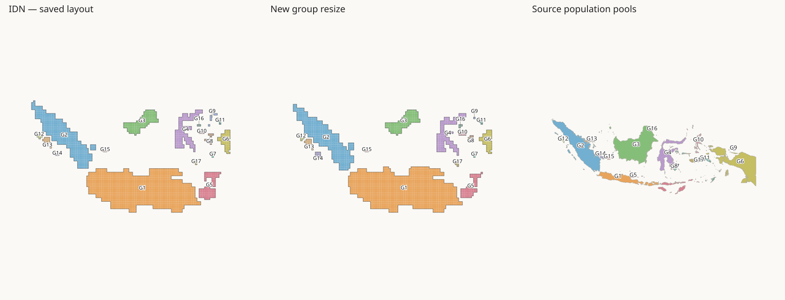
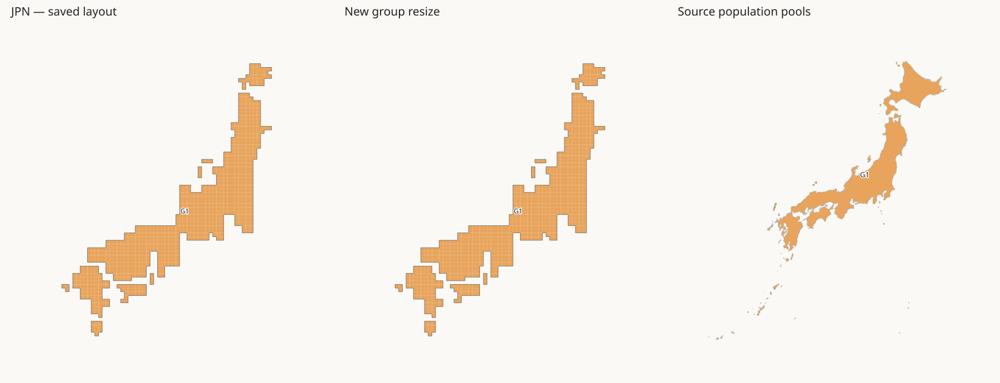
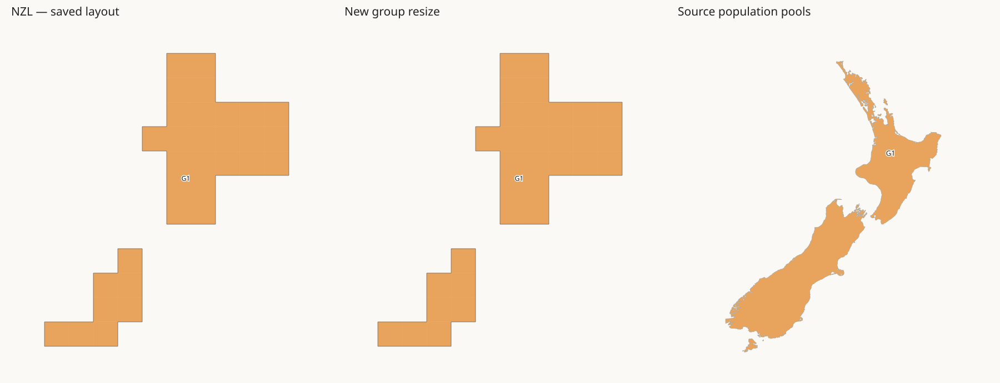
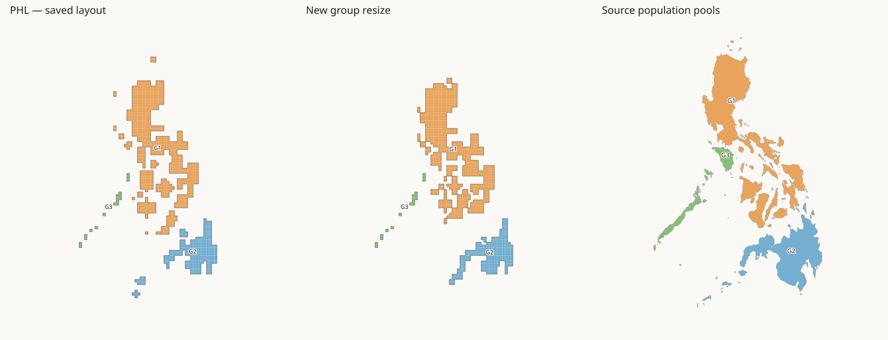
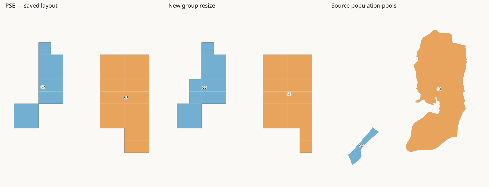
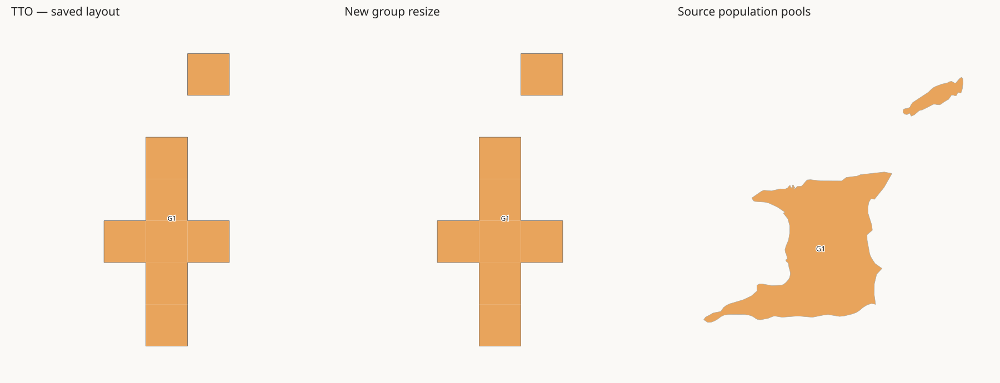
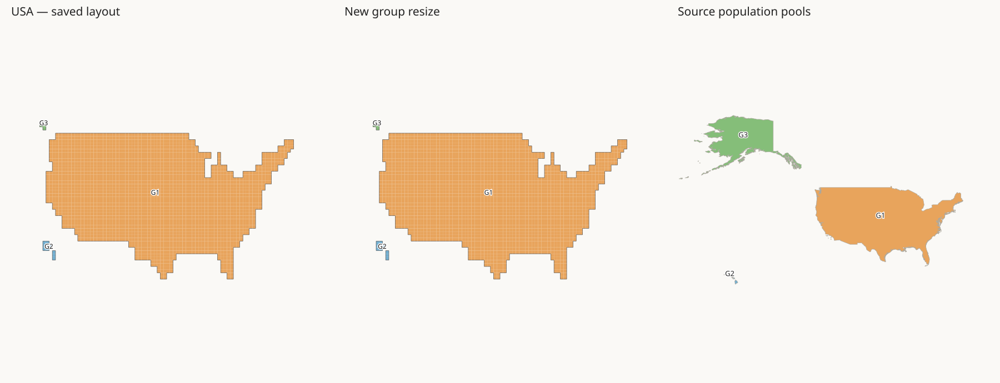

This is a separate Julia trial. The saved layout and H3-MON exports have not changed. Population matching was rerun for 10 scopes affected by corner grouping. All other assignments remain from the saved layout.
Checks: 54967 land tiles; exact country totals; 18 groups change tile count; all shared group borders retained; all 64 enclosed water cells retained at their original positions. The layout has 244 groups, including the added population scopes.
Each artwork group can receive several source components. Strong child matches add source anchors but do not receive separate tile budgets. Unmatched source components join the nearest source anchor. Weak target groups share a nearby population pool. The minimum is one tile per existing G group, not one tile per old T fragment.
Read the images: The two tile panels share a scale. The geographic panel uses a separate scale. Colours identify the new population pools in all three panels. Labels identify G groups. Fallback target groups can share a colour. Only the selected country is shown. Empty space stays empty; no water tiles are assigned to countries.
Saved layout · Corner-group definitions · Budgets · Source assignments · Old T-to-G IDs · New cells · Checks and hashes

| Group | Saved tiles | New tiles | Population pool | Pool population | Match |
|---|---|---|---|---|---|
| BRA:G1 | 1469 | 1469 | BRA:G1 | 213523060 | automatic_group |
Pool population is repeated for fallback groups. Do not add repeated pool values.

| Group | Saved tiles | New tiles | Population pool | Pool population | Match |
|---|---|---|---|---|---|
| GRC:G1 | 66 | 67 | GRC:G1 | 9590123 | automatic_group |
| GRC:G2 | 2 | 1 | GRC:G2 | 205166 | automatic_group |
Pool population is repeated for fallback groups. Do not add repeated pool values.

| Group | Saved tiles | New tiles | Population pool | Pool population | Match |
|---|---|---|---|---|---|
| HKG:G1 | 56 | 56 | HKG:G1 | 6042118 | automatic_group |
Pool population is repeated for fallback groups. Do not add repeated pool values.

| Group | Saved tiles | New tiles | Population pool | Pool population | Match |
|---|---|---|---|---|---|
| IDN:G1 | 1068 | 1093 | IDN:G1 | 155911984 | automatic_group |
| IDN:G2 | 386 | 380 | IDN:G2 | 54253880 | automatic_group |
| IDN:G3 | 118 | 118 | IDN:G3 | 16781841 | automatic_group |
| IDN:G4 | 134 | 132 | IDN:G4 | 18830559 | automatic_group |
| IDN:G5 | 88 | 64 | IDN:G5 | 9088756 | automatic_group |
| IDN:G6 | 52 | 52 | IDN:G6 | 7400520 | automatic_group |
| IDN:G7 | 2 | 2 | IDN:G7 | 300659 | automatic_group |
| IDN:G8 | 7 | 3 | IDN:G8 | 395835 | automatic_group |
| IDN:G9 | 6 | 1 | IDN:G9 | 158546 | automatic_group |
| IDN:G10 | 3 | 8 | IDN:G10 | 1080668 | automatic_group |
| IDN:G11 | 3 | 4 | IDN:G11 | 613130 | automatic_group |
| IDN:G12 | 6 | 5 | IDN:G12 | 737122 | automatic_group |
| IDN:G13 | 13 | 13 | IDN:G13 | 1777921 | automatic_group |
| IDN:G14 | 2 | 9 | IDN:G14 | 1258300 | automatic_group |
| IDN:G15 | 2 | 2 | IDN:G15 | 289304 | automatic_group |
| IDN:G16 | 2 | 3 | IDN:G16 | 465013 | automatic_group |
| IDN:G17 | 2 | 5 | IDN:G17 | 776907 | automatic_group |
Pool population is repeated for fallback groups. Do not add repeated pool values.

| Group | Saved tiles | New tiles | Population pool | Pool population | Match |
|---|---|---|---|---|---|
| JPN:G1 | 858 | 858 | JPN:G1 | 121669295 | automatic_group |
Pool population is repeated for fallback groups. Do not add repeated pool values.

| Group | Saved tiles | New tiles | Population pool | Pool population | Match |
|---|---|---|---|---|---|
| NZL:G1 | 32 | 32 | NZL:G1 | 4660576 | automatic_group |
Pool population is repeated for fallback groups. Do not add repeated pool values.

| Group | Saved tiles | New tiles | Population pool | Pool population | Match |
|---|---|---|---|---|---|
| PHL:G1 | 590 | 593 | PHL:G1 | 79572486 | automatic_group |
| PHL:G2 | 200 | 197 | PHL:G2 | 26457949 | automatic_group |
| PHL:G3 | 18 | 18 | PHL:G3 | 2328015 | automatic_group |
Pool population is repeated for fallback groups. Do not add repeated pool values.

| Group | Saved tiles | New tiles | Population pool | Pool population | Match |
|---|---|---|---|---|---|
| PSE:G1 | 28 | 26 | PSE:G1 | 3377254 | automatic_group |
| PSE:G2 | 13 | 15 | PSE:G2 | 2041145 | automatic_group |
Pool population is repeated for fallback groups. Do not add repeated pool values.

| Group | Saved tiles | New tiles | Population pool | Pool population | Match |
|---|---|---|---|---|---|
| TTO:G1 | 8 | 8 | TTO:G1 | 1485866 | automatic_group |
Pool population is repeated for fallback groups. Do not add repeated pool values.

| Group | Saved tiles | New tiles | Population pool | Pool population | Match |
|---|---|---|---|---|---|
| USA:G1 | 2254 | 2254 | USA:G1 | 332349999 | automatic_group |
| USA:G2 | 10 | 10 | USA:G2 | 1461365 | automatic_group |
| USA:G3 | 4 | 4 | USA:G3 | 573153 | automatic_group |
Pool population is repeated for fallback groups. Do not add repeated pool values.